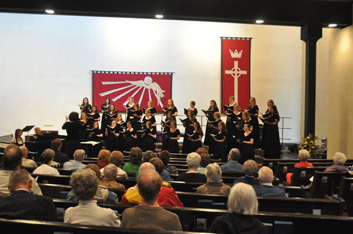

The Sanctuary
The modern sanctuary comfortably seats about 300 people. There is very little fabric, so the space has live acoustics.

Sanctuary with five 3-step Wenger Tourmaster® standing choral risers
(Saint Mary’s College Women’s Choir under the direction of Dr. Nancy Menk, April 3, 2011)
Sanctuary with five 3-step Wenger Tourmaster® standing choral risers
(Saint Mary’s College Women’s Choir under the direction of Dr. Nancy Menk, April 3, 2011)